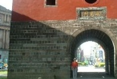
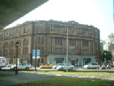
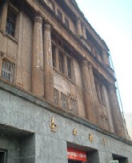

台北で、日本へ手紙を出すために郵便局へ行った。ちょうど北門と道路を隔てた すぐ筋向かいに郵便局がある。※下の写真の左側に、チラっとだけ写っている古いビル。

遠くから見ると、どっしりした古いビルという感じ。

ところが近くに行ってみると、古いなんてもんじゃない。郵便業務を行っている１階は内外装ともキチンとしていたが、２階から上の壁は いまにも崩れ落ちそう....さすがにこれでは危ないというので、全体をネットで覆ってあった。

しかしどこかの後進国ならともかく、ここは台湾。どうしてこんなに古いビルを立て替えないのか不思議に思った。じっさい持参した観光案内にも載っていないので、特に由緒ある建物とも思えない。
とはいうもののこんな状態でも取り壊さないところを見ると、なにか由緒ある建物なんだろうと思って、一応 写真を撮ってきた。帰国してからネットで調べると、日本人の栗山俊一という技師の設計で、旧・台北郵便局として1930年（s05）竣工とあった。
http://homepage.mac.com/xiaogang/taiwan/place/taibei/zhongzheng/postOffice.html
現在は単に台北市の１郵便局’（北門郵便局）であるが、三級古蹟に指定されているので、簡単に取り壊すことができないらしい。なるほど、壊れそうな郵便局に納得。(^-^；
|